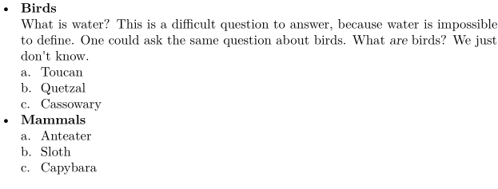
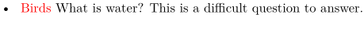
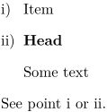

Syntax
| \head ... \par | |
| \starthead[ref,ref,...]{Title} ... \stophead | |
| [ref,ref,...] | |
Description
Used in itemizations. Prints the first paragraph of an item in the headstyle specified in \startitemize, and prevents a pagebreak from occurring between the head and the next item. By default, the headstyle is simply the normal style. A \par after a \head is required, so that ConTeXt may distinguish between the header line and the rest of the head item.
Because the occasional bold item in a list still does not look very much like a head, the items under the head are often printed in a nested \startitemize.
Referring to the head
The syntax \head[ref] does not work - it is necessary to use \starthead[ref] ... \stophead
Example
-
\startitemize[packed][headstyle=bold] \head Birds \par What is water? This is a difficult question to answer, because water is impossible to define. One could ask the same question about birds. What {\em are} birds? We just don't know. \startitemize[a] \item Toucan \item Quetzal \item Cassowary \stopitemize \head Mammals \par \startitemize[continue] \item Anteater \item Sloth \item Capybara \stopitemize \stopitemize
- 
In LMTX, the preferred syntax is:
-
\startitemize[packed, headintext][headcolor=red] \starthead{Birds} What is water? This is a difficult question to answer. \stophead \stopitemize
- 
Example of a reference
-
\startitemize[i][stopper=),headstyle=bold] \item[TheItem] Item \starthead[TheHead]{Head} Some text \stophead \stopitemize See point \in[TheItem] or \in[TheHead].
- 
See also
- \startitemize
- \item to print ordinary items
- Text blocks/Environments/Lists of items
Help from ConTeXt-Mailinglist/Forum
All issues with: